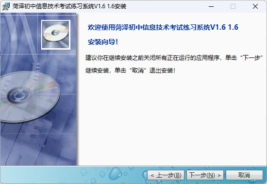

链接：https://pan.quark.cn/s/dc6e5bfabc37
链接：https://share.feijipan.com/s/xPXYomJ3
从网盘下载安装包
为了确保正常练习，请必须使用此WPS校园版。
安装这个文件夹里面的WPS校园版(官网上面向普通用户的家用版也可以，只是这个校园版完全符合办公三件套练习题的操作标准，其他版本操作可能不得分)
WPS Office安装包
直接下载打开安装包进行安装即可
如果杀毒软件拦截请“允许”（为什么会被拦截大家懂的都懂）
配置好直接安装即可
安装好以后正常使用即可
注意：下面是WPS取消广告展示的方法
右键桌面上的WPS图标，选择“打开文件所在位置”
打开文件所在位置
打开“WPS Office”文件夹，找到“11.3.0.8775”文件夹，进去以后再进“office6”文件夹，找到ksomisc.exe文件，双击打开
打开ksomisc.exe
在弹出的窗口中，点击“高级”
点击“高级”
在“其他选项”里面，把广告相关的三个选项的勾取消勾选
取消勾选“显示广告”
点击“确定”，然后你的WPS Office就没有广告了，如果还有弹窗广告的话建议安装一个火绒安全软件，可以屏蔽弹窗广告